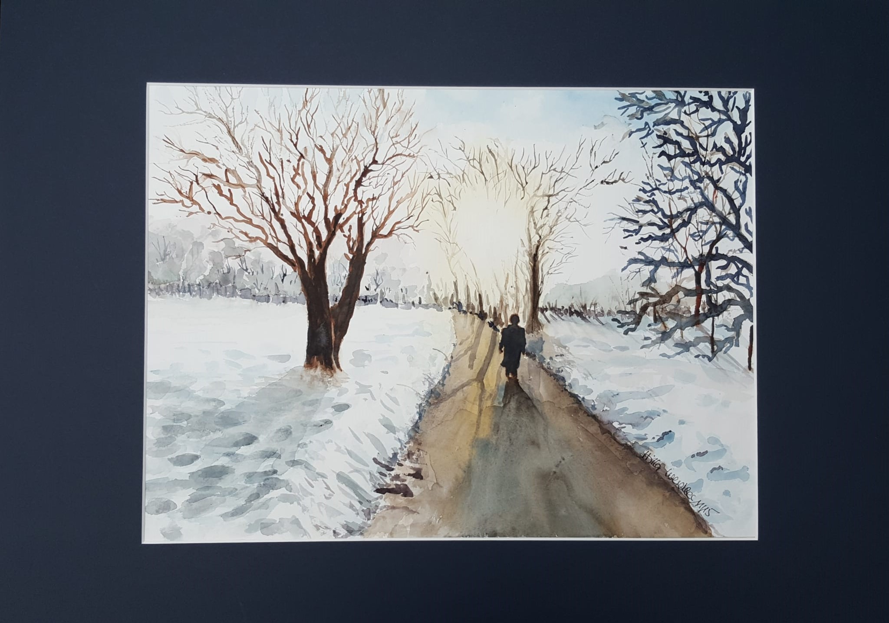

Aktuelles Konzert
Virtuelles Konzert - Kammermusik zum neuen Jahr 2022
Um eine Spende wird freundlich gebeten:
Zewener Kammerkonzerte e.V.
DE72 5855 0130 0001 1023 59
Im Zentrum unseres heutigen Konzerts steht das erste Lied aus Schuberts Liederzyklus „Winterreise“ mit dem Titel “Gute Nacht”. Der Protagonist verabschiedet sich darin heimlich von seiner Liebsten, bei der er den Sommer verbracht hatte und bricht zu seiner Wanderschaft auf. Die Winterreise erfreute sich damals wie heute gleichermaßen großer Beliebtheit und auch die Adaptionspraxis für andere Besetzungen war besonders beliebt. So stammt die Umsetzung für Flöte und Klavier von dem berühmten Flötenvirtuosen Theobald Böhm. Wir wollen noch einen Schritt weiter gehen und kombinieren bildgebende Kunst und Musik: Die einzelnen Strophen werden begleitet von Gemälden von 4 regionalen Künstlern. Daher gilt ein besondere Dank Suzanne Beaujean-Adam, Hilla Weidler, Horst Binsel und Werner Huwer. Ihre Bilder zu den einzelnen Strophen stehen ab sofort zum Verkauf und können per Email angefragt werden, wobei jeweils die erste Zuschrift berücksichtigt wird.
(Kontakt: email@zewener-kammerkonzerte.de)
Digitale Vernissage

Künstler: Werner Huwer
- Leinwand
- 70x50cm, ungerahmt
- Preis: 230 Euro
„Die Zypressen beschäftigen mich dauernd, ich möchte so was Ähnliches
wie die Sonnenblumenbilder daraus machen, denn es wundert mich,
dass man sie noch nicht gemalt hat, wie ich sie sehe.
In den Linien und in den Proportionen sind sie schön wie ein
ägyptischer Obelisk. Und das Grün ist ein so ganz besonders feiner Ton.
Es ist der schwarze Fleck in einer sonnenbeschienenen Landschaft,
aber es ist einer der interessantesten schwarzen Töne,
doch ich kann mir keinen denken, der schwieriger zu treffen wäre.
Man muss die Zypressen hier gegen das Blau sehen,
in dem Blau, richtiger gesagt.“
- Vincent van Gogh

Künstler: Horst Binsl
- Acryl auf Malpapier
- 70x50cm, ungerahmt
- Preis: 180 Euro
“Ich male schon schon seit meiner Jugend gerne, aber
mir fehlte einfach die Zeit es intensiver zu
betreiben. Seit Sommer 2019 bin ich dem
Arbeitsleben entronnen und kann mich jetzt
endlich ganz der Malerei widmen. Im November
2019 besuchte ich einen Kurs zum Thema
”Wellen malen”. Dort habe ich mein Wissen
über Farblehre, Perspektiven und Vorgehensweisen
in der Acrylmalerei erweitern können.”

Künstlerin: Suzanne Beaujean-Adam
- Acryl, Kreide auf Papier
- 23,5 x 20 cm
- Passepartout und Metallrahmen: 60x50cm
- Preis: 350 Euro
“Malen und Zeichnen gilt für mich als
Verarbeitungsmöglichkeit von ERlebtem. Durch
das”Ausdrücken” im Bild findet ein innerer
Klärungsprozess statt. Im Mittelpunkt steht die
Begegnung mit dem “Anderen”. Die Darstelleung
des Körperlichen (des Seelischen im Körperlichen)
nimmt einen großen Raum ein
bis hin zu abstrakten Ausdrucksformen.”

Künstlerin: Hilla Weidler
- Titel: Auf dem Weg
- Aquarell
- Mit 50x70cm Passepartout
- Preis: 250 Euro
“Malen und Zeichen war für mich seit
Kindesbeinen eine Beschäftigung, in die
ich ganz versinken kann und wenn am
Ende ein fertiges Bild vor mir liegt, bin ich
manchmal ganz verwundert …
Und in der Landschaft zu sitzen, wenn ich
male, ist für mich das Allerschönste.”